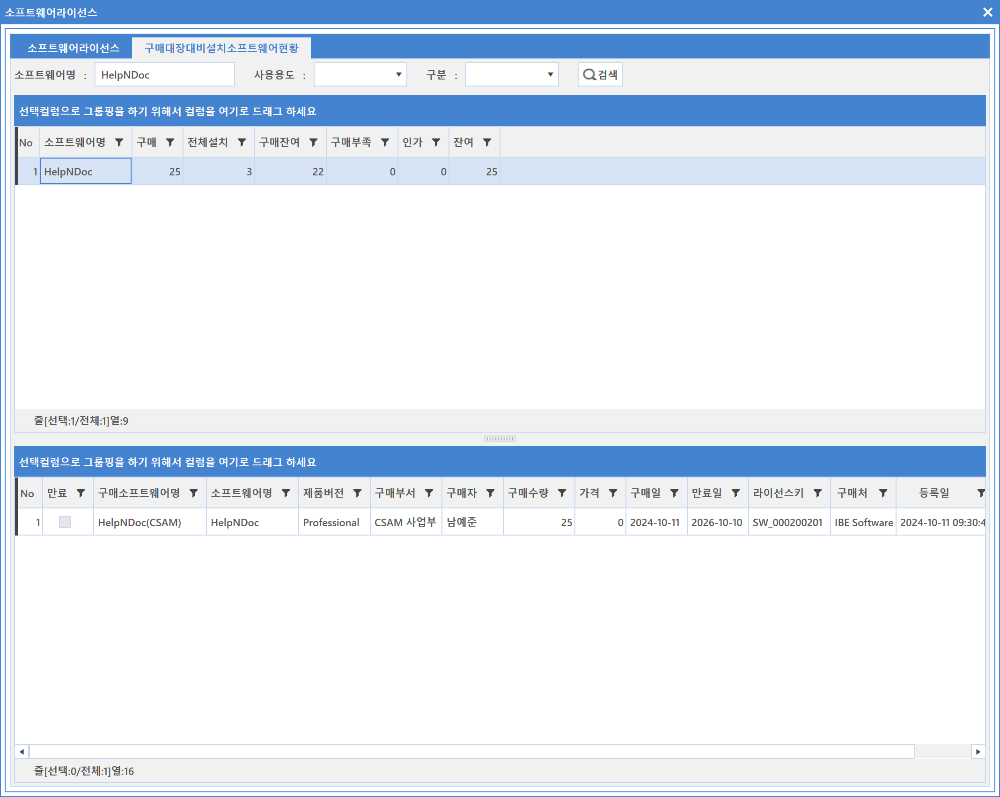
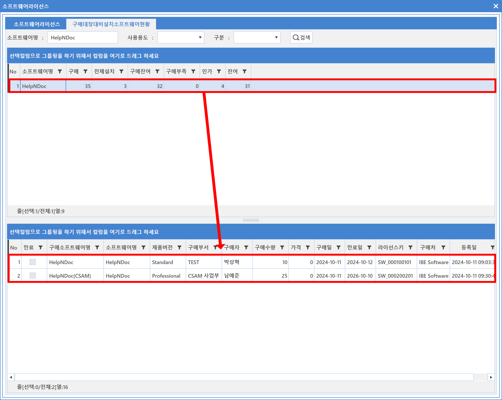

5-1-1-4. 구매대장 대비 설치 소프트웨어 현황
5-1-1-4. 구매대장 대비 설치 소프트웨어 현황
Source: https://www.sweeper.or.kr/etc/manual/5-1-1-4.html
5-1-1-4. 구매대장 대비 설치 소프트웨어 현황
5. 소프트웨어 ›› 5-1. 자산관리 ›› 5-1-1. 라이선스 ››


기업에서 구매한 소프트웨어 라이선스를 기준으로 구매/설치/잔여 등의 현항을 확인할 수 있습니다.
즉, 구매한 소프트웨어 대비하여, 전체 설치현황을 확인하거나, 부족분/잔여사항등을 확인할 수 있습니다.
소프트웨어 현황

컬럼 설명
- 구매 : 구매한 소프트웨어 라이선스 수량
- 전체설치 : 해당 소프트웨어를 설치한 장비 수량
- 구매잔여 : 구매량에서 전체설치수량을 제외한 수량
- 인가 : 관리등록한 소프트웨어 중 장비나 사용자에 라이선스를 할당한 수량
- 잔여 : 인가 후 남은 수량
상단의 특정 소프트웨어를 선택하면, 하단의 정보창에서 해당 소프트웨어에 대한 구매 정보가 나타납니다.
아래 그림과 같이 등록했다면, 동일 데이터가 다수 보여집니다.

참고사항
"구매대장대비 설치소프트웨어현황" 탭에서 각 소프트웨어를 더블클릭하면 소프트웨어상세 화면으로 연결됩니다.
© Copyright SWeeper Inc.. All Rights Reserved